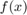
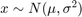
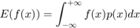
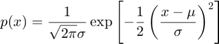
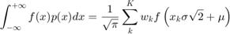
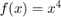
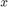

Quadrature
Contents
Gauss-Hermite Quadrature
There are many specialized methods for efficient integration. They only work in very specific circumstances. One that is very useful is Gauss-Hermite quadrature, which is ideal for integrating functions that include a normal distribution as a factor. For example, consider the expected value of  if :


It turns out this can be well approximated by a weighted average of the function evaluated at specifically chosen points:

Gauss-Hermite Example
Let's see this at work for :
fcn = @(x) x.^4 ;
Let's also set the parameters of the  distribution:
mu = 1; si = 1;
Those specifically chosen points are called the quadrature nodes, and you can just look them up! These are the weights w and nodes x for 20 nodes (the values change if you choose a different number of nodes).
w = [ 2.22939E-13 4.39934E-10 1.08607E-7 7.80256E-6 2.28339E-4 ... 0.00324377 0.0248105 0.109017 0.286676 0.462244 ... 0.462244 0.286676 0.109017 0.0248105 0.00324377 ... 2.28339E-4 7.80256E-6 1.08607E-7 4.39934E-10 2.22939E-13]; x = [ -5.38748 -4.60368 -3.94476 -3.34785 -2.78881 ... -2.25497 -1.73854 -1.23408 -0.73747 -0.24534 ... 0.24534 0.73747 1.23408 1.73854 2.25497 .... 2.78881 3.34785 3.94476 4.60368 5.38748]; A = sum(fcn(x * sqrt(2) * si + mu) ./ sqrt(pi) .* w)
A = 10.0000